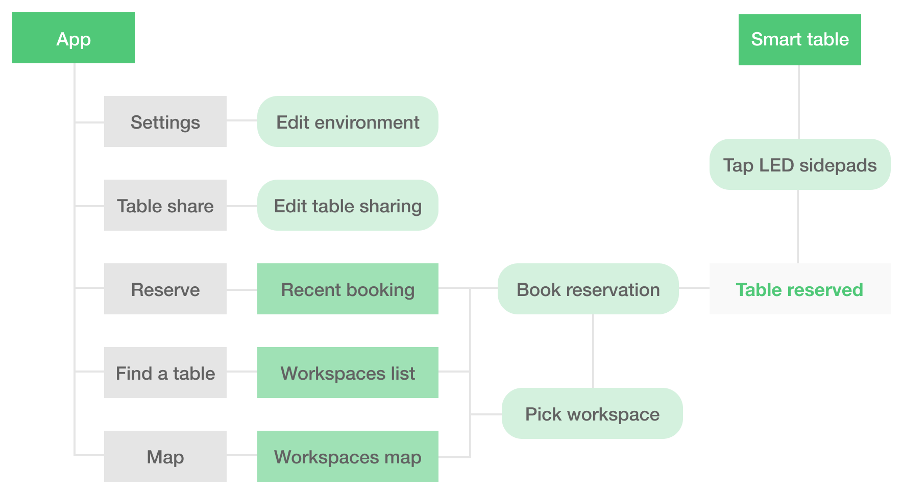
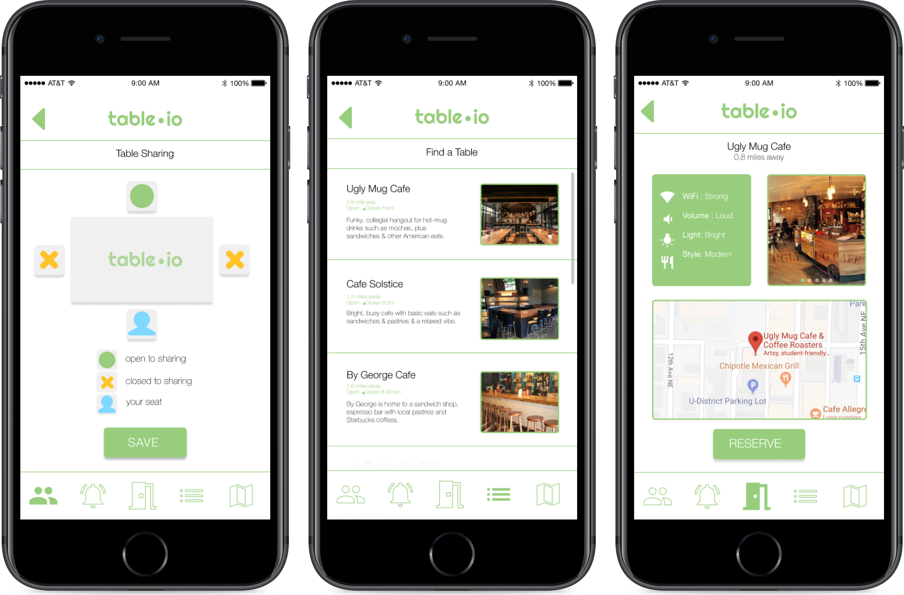
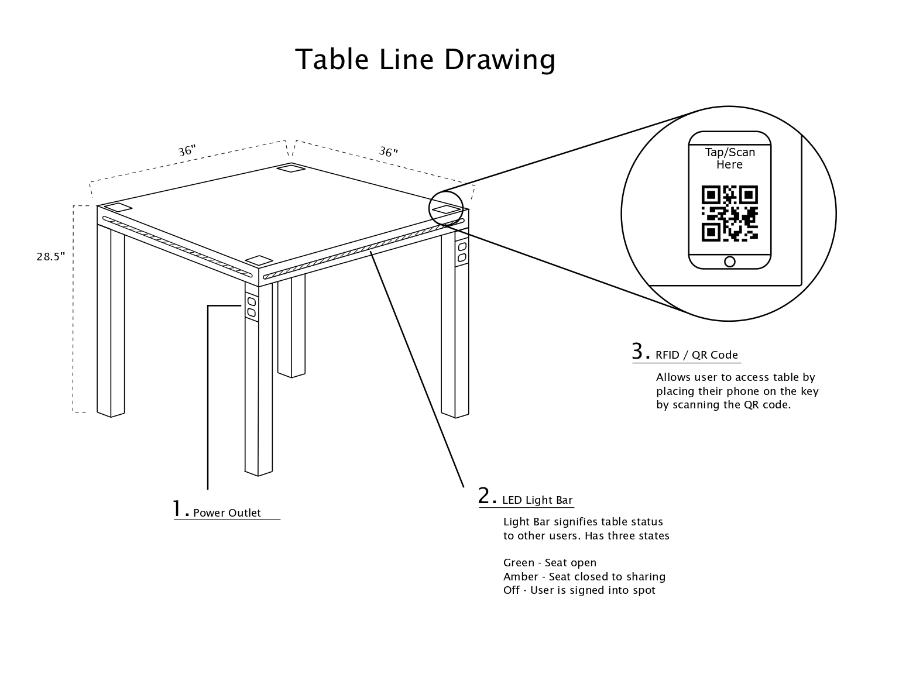
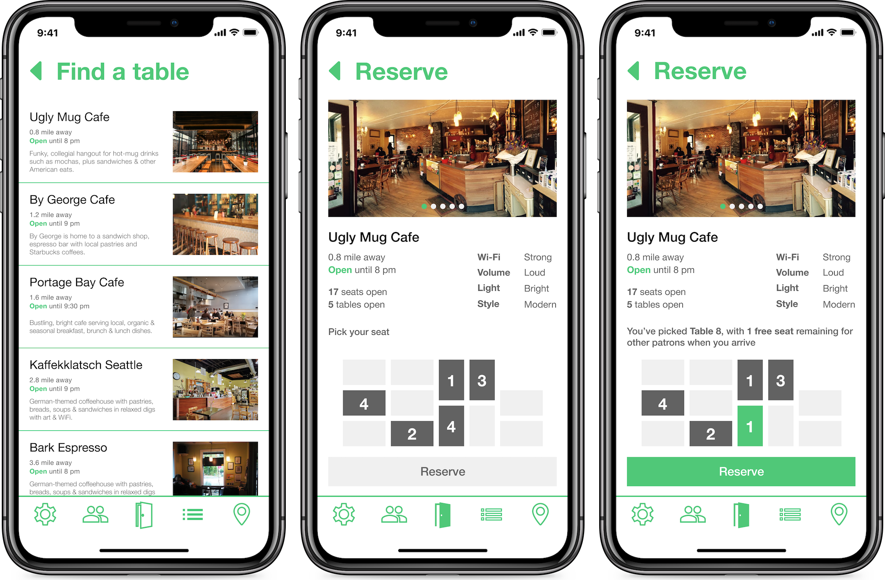
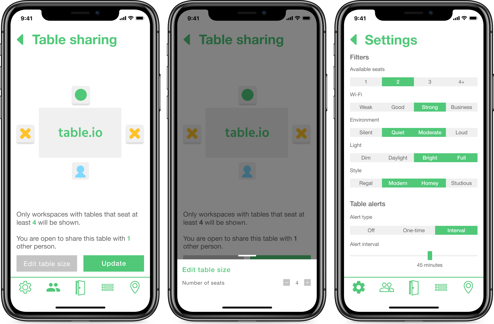
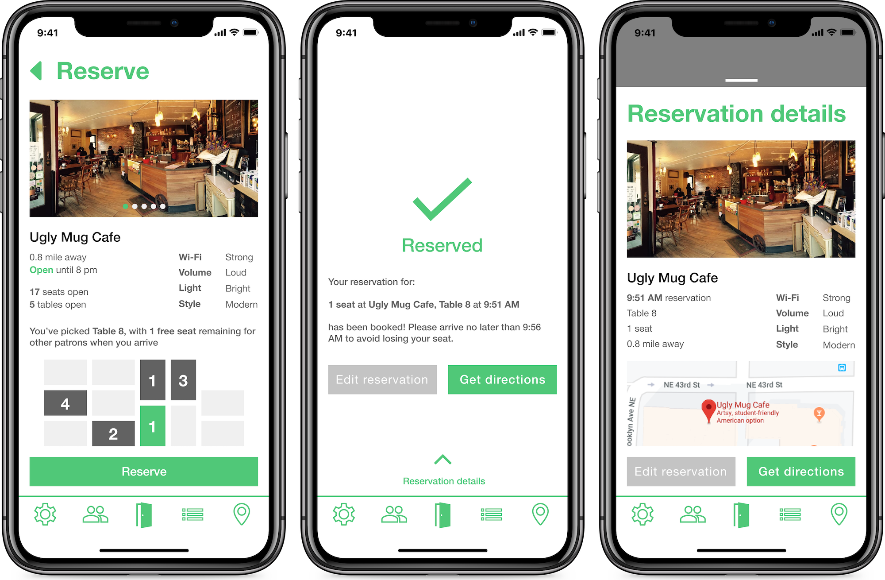

table.io is a directory to a network of smart tables, hosted by cafes and libraries, that helps users find public workspaces. Currently, the process of finding a workspace suited for someone's personal needs is fragmented. Online tools may show an establishment's general trend of congestion throughout the day (i.e. Google's "Popular times" graph), but lack real-time, specific data visualization of patron traffic and seat availability.
table.io is the solution.
I worked with three other students throughout this 10-week project, leading the mobile app design. Following the project, I have redesigned the whole app for iPhone XS compatibility.
We began our research in this space with a contextual inquiry study at Café on the Ave, a popular study spot for UW students. Then, we followed up with 20 individual interviews with patrons of other local cafes, to better understand our user group and their existing pain points.
Insights from our user interviews and contextual inquiry helped us create user personas and map their pain points, goals, and typical scenarios to a journey map.
I identified requirements that our solution should address:
Given our design requirements, I created user scenarios to guide our ideation process. I started by sketching storyboards of potential scenarios, and then translated them to higher fidelity picture storyboards.
Our proposed solution came intuitively: first, a mobile app workspace directory that highlighted important environmental attributes: average noise level, internet connectivity, congestion and availability at specific times of day. Second, a paired smart table that would essentially replace traditional desks and tables at workspaces. The application and smart tables work synchronously; users can interact with the physical table to display whether they are open-to-sharing with others or not, or may select those same sharing preferences in their application, and once “signed in” to the table, have those sharing preferences reflected on the table’s display.
How the mobile app and smart table work together is visualized here: 
Next, we synthesized feedback from our paper prototype testing and incorporated them when moving to our lo-fi prototypes, creating key path scenarios of most important user flows.
After iterating on our design hierarchy and use of color from our wireframes, we created high-fidelity screens of key screens. Users can reserve table.io tables after setting their preferred workspace preferences, which range from the noise level of the work environment to the lighting style, all from the application. They can also set their table-sharing preferences, which allow them to set just how many spaces at their table they want to share, whether it’s just an extra seat across the table, or none at all.

Additionally, we mocked up a 4-seater table.io table, which would be hosted at the various workspaces in our network. These tables are non-intrusive, with no screens or buttons. Their only interaction points are used to manually change seat availability and update the network, typically by wait staff at the workspace.

Upon arrival, users can scan in to the table, which will update the network, showing the table's reservation as occupied. Tappable LED sidebars at each of the table's edges represent whether a seat is open or not (per the user's preferences). Green signifies open, amber signifies closed.
A few weeks after the final submission of our project, I still felt like our mobile app needed further refinement. So I redesigned the whole thing.
The redesign uses a base-4 grid to keep all elements in-line, and updated iconography and color to improve visual communication. All corners have been de-rounded to 0 (versus the previous 4pt), to embrace a "table"-esque design language, snapping to the grid as a cafe might organize their tables.
As this redesign was created for the iPhone X, I took advantage of the increased screen real estate and introduced new elements, like the seat selector module in the "Reserve" screen, as well as "Success" screens and action sheets.
  
Although I'm glad I was able to redesign the app in its entirety, I realized that the team and I should have devoted more resources to our paired smart table. As the physical table is such a large portion of our product (also what business/cafe/workspace owners would be interested in the most), I wish we could have iterated further on a table prototype, and run usability tests with working, reactive LED panels, to see how our results would have differed from our paper prototype testing, and what changes we would need to iterate on for a complete build.
Regarding the mobile app, I realized how important it was far too late in the design process just how important establishing a design language and component library are to efficient and consistent design. While we tried to stay as communicative as possible about which elements had what properties, many aspects of our initial frames were rushed and thus lacked structure. This oversight made for a particularly difficult redesign.